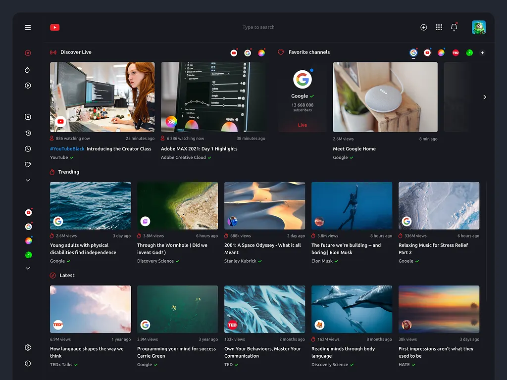

Проект POTOK
Дата формирования отчёта 31.03.2026
**Структура:** пункт **1** — цель и база; пункт **2** — разработка (2.1–2.5 текстом, **2.6** — иллюстрация при наличии файла и **листинги кода**); сводная таблица; заключение.
Этот вариант отчёта — **подробная редакция**: сначала развёрнутое описание работ, затем иллюстрация (если файл есть), затем **только листинги исходного кода** (SQL и приложение), без дерева каталогов.
Целью производственной практики является применение теоретических знаний, полученных при изучении профессионального модуля ПМ 09 «Проектирование, разработка и оптимизация веб-приложений», при разработке программного продукта POTOK. Практика направлена на формирование устойчивых навыков проектирования интерфейсов, реализации пользовательских сценариев, интеграции с серверными сервисами и подготовки сопроводительной документации с пояснениями и листингами.
Практика выполнялась в рамках учебного проекта в репозитории potok. Технологический стек: Next.js, TypeScript, Supabase, Pusher, Plyr. Работа организована с использованием системы контроля версий, переменных окружения для конфигурации и проверки ключевых сценариев после изменений.
Нормативное задание для сдачи оформлено как **docs/tehnicheskoe_zadanie_potok.pdf** (исходная разметка — TECH_SPEC.md; при необходимости PDF собирается скриптом `scripts/generate_tz_pdf.py`). Макет интерфейса в Figma служил ориентиром по компоновке экранов; далее макет был перенесён в кодовую базу Next.js (App Router) с разбиением на страницы и компоненты.
Реализация ведётся в соответствии с требованиями ТЗ к MVP: роли пользователей, видео, категории, комментарии, уведомления, режимы real-time, нефункциональные требования к модульности и разделению клиентской и серверной логики. Архитектурно приложение опирается на связку Next.js и Supabase. К актуальной редакции ТЗ добавлены положения о **модерации**: роли `moderator` и `admin`, очередь жалоб (`reports`), возможность пользователя пожаловаться на видео, комментарий или канал; **эвристические рекомендации** на главной ленте и в боковой панели просмотра (просмотры, лайки, свежесть, подписки, история); **ответы на комментарии** в один уровень вложенности, уведомление адресату об ответе, отметки автора канала («сердце автора») на комментариях без ограничения их числа. Нормативный документ в оформленном виде: **docs/tehnicheskoe_zadanie_potok.pdf** (исходник разметки — `TECH_SPEC.md`, сборка PDF скриптом `scripts/generate_tz_pdf.py`).
Прежде чем переходить к перечислению файлов и фрагментов исходного кода, целесообразно последовательно и достаточно подробно описать ту работу, которая была выполнена на этапе внедрения пользовательского интерфейса и адаптивной вёрстки, поскольку именно этот слой определяет первое впечатление пользователя и во многом задаёт удобство дальнейшего взаимодействия с платформой POTOK. В рамках практики интерфейс рассматривался не как набор отдельных «картинок», а как целостная система: от корневого макета приложения и глобальных настроек области просмотра до поведения отдельных блоков на экранах разной ширины — от смартфона до широкого монитора.
Исходной точкой оставалось техническое задание и макет в Figma, в котором были зафиксированы основные сценарии: переход от главной ленты к просмотру видео, работа с поиском, навигация по разделам, связанным с каналом и студией автора. Перенос макета в код осуществлялся в экосистеме Next.js с использованием App Router: такой подход позволяет естественно разделить маршруты по каталогу `web/src/app`, а переиспользуемые визуальные и логические блоки — вынести в `web/src/components`. Корневой файл `web/src/app/layout.tsx` задаёт оболочку страницы: подключение глобальных стилей, шрифтов и обёртку `AppShell`, внутри которой уже размещается содержимое конкретных маршрутов. Отдельного внимания заслуживает экспорт `viewport` с параметром `viewportFit: "cover"`: он нужен для того, чтобы на устройствах с вырезом экрана («чёлкой») и скруглёнными углами контент корректно заполнял безопасную область, а системные отступы можно было учесть в компонентах через CSS-переменные окружения `env(safe-area-inset-*)`.
Каркас приложения, с которым пользователь сталкивается на каждой странице, построен вокруг верхней шапки и боковой панели навигации. Компонент `AppHeader` отвечает за узнаваемый верхний ряд: логотип, центральный блок поиска и действия, связанные с учётной записью. Для узких экранов, когда боковая панель по умолчанию скрыта и не занимает место в потоке, в шапке была добавлена отдельная кнопка с иконкой меню: по нажатию вызывается функция из контекста сайдбара (`useSidebarState`), и пользователь получает привычный паттерн, сходный с мобильным интерфейсом YouTube — навигация не «теряется», а становится доступной по явному запросу. Таким образом, на десктопе сохраняется привычная двухколоночная схема, а на планшете и телефоне интерфейс остаётся читаемым и не перегружен горизонтальными элементами.
Компонент `Sidebar` реализует боковую панель как элемент, который ведёт себя по-разному в зависимости от ширины экрана. На больших ширинах панель участвует в общей сетке страницы, может быть развёрнута (с подписями пунктов) или свёрнута до узкой полосы с иконками. На экранах уже контрольной точки `lg` панель превращается в выезжающий «ящик»: она фиксируется у края, получает собственную прокрутку при длинном списке пунктов и закрывается при выборе маршрута на сенсорном устройстве, чтобы не оставлять полупрозрачный слой поверх контента без необходимости. В стилях заложены отступы с учётом `safe-area` сверху и снизу, чтобы на современных телефонах нижняя часть меню не уезжала под системную полосу жестов.
Главная страница строится как связка полосы категорий и блока рекомендаций. Полоса категорий (`CategoryChipsBar`) визуально напоминает аналог на крупных видеосервисах: горизонтальный ряд чипов с иконками, который можно прокручивать свайпом, а на широких экранах дополнительно подстрахован стрелками прокрутки. Блок закреплён под шапкой с помощью `position: sticky`, причём вертикальное смещение `top` вычисляется с учётом высоты шапки и снова же смещения из safe-area, чтобы при прокрутке ленты категории не «наезжали» на логотип и поиск. Такое решение требует согласованности между высотой шапки и формулой смещения, зато даёт предсказуемое поведение на разных устройствах.
Центральная часть главной — сетка карточек видео (`HomeVideoFeed`). Здесь была настроена ступенчатая адаптация: на самых узких экранах карточки идут в одну колонку, что упрощает нажатие пальцем и чтение заголовков; на промежуточной ширине появляются две колонки; на ноутбуке — три; на очень широких экранах (`xl` и выше) сетка расширяется до четырёх колонок в ряд по аналогии с привычной лентой YouTube, при этом общая ширина контента ограничена разумным максимумом, чтобы на мониторах с большим разрешением строка не растягивалась до нечитаемо редких карточек. Дополнительно нижний отступ контейнера учитывает safe-area снизу, чтобы последний ряд карточек не оказывался под системной навигацией.
Поиск в шапке реализован отдельным компонентом; для корректного сжатия внутри гибкой строки шапки контейнер поиска снабжён классами вроде `min-w-0`, что важно в типичной для Flexbox ситуации, когда без явного ограничения минимальной ширины поле ввода «отказывается» сужаться и выталкивает соседние элементы. Подобные детали кажутся мелкими, но именно они отделяют «просто собранный интерфейс» от интерфейса, который стабильно ведёт себя на реальных устройствах.
После внесения перечисленных изменений выполнялась проверка сборки командой `npm run build` в каталоге веб-приложения. Успешное завершение сборки в режиме production подтверждает отсутствие синтаксических ошибок, согласованность типов TypeScript и корректную работу статического анализа в рамках конфигурации Next.js. Таким образом, блок работ по интерфейсу и адаптиву был не только спроектирован и реализован в коде, но и верифицирован на уровне инструментов сборки, что для отчётной документации по практике является важным практическим аргументом.
Далее по тексту подраздела об интерфейсе приводятся иллюстрации (при наличии файлов) и полный блок листингов исходного кода без перечня структуры папок: SQL и фрагменты TypeScript/React, подтверждающие изложенное.
Схема данных и политики безопасности на уровне строк (RLS) задаются SQL-скриптами в каталоге **web/supabase**. В миграции **15_moderation_recommendations.sql** добавлены таблицы `reports` (жалобы на видео, комментарий или канал) и `comment_author_hearts` (отметки автора канала на комментариях), поля `role`, `banned_until` и `ban_reason_code` в `public.users`; триггер ограничивает ответы на комментарии **одним уровнем**; при ответе создаётся запись в `notifications`. Политики RLS дополнены: модератор может удалять комментарии и изменять видимость видео; пользователь с активным баном не может создавать комментарии. На стороне приложения используются клиенты Supabase (`web/src/lib/supabase/client.ts`, `server.ts`, `service.ts`). Детальные листинги SQL приведены в п. 2.6.
Используется Supabase Auth: регистрация и вход по электронной почте и паролю, сценарии восстановления доступа с подтверждением через письмо. Страницы расположены в `web/src/app/auth/` и связанных маршрутах; шаблоны писем — в `web/supabase/email-templates/`. Роль пользователя в приложении (`user`, `moderator`, `admin`) хранится в таблице `public.users` и проверяется на сервере при доступе к маршрутам `/api/moderation/*` и к странице **/admin**.
Данные запрашиваются через Supabase SDK; медиафайлы размещаются в Storage; для realtime используется Pusher и серверный маршрут `web/src/app/api/realtime/pusher/trigger/route.ts`. Добавлены HTTP-маршруты **POST /api/reports** (подача жалобы), **GET /api/moderation/reports** и **PATCH /api/moderation/reports/[id]** (очередь модератора, разбор жалобы, при необходимости **бан** пользователя через сервисный ключ Supabase). Рекомендации для ленты и боковой панели «Следующее» на странице просмотра считаются в модуле `web/src/lib/recommendations.ts`. Доступ к таблицам регулируется политиками RLS. В качестве ориентира по функциональности выступают массовые видеоплатформы; полный их функционал в учебном MVP не копировался — реализован объём, определённый ТЗ.

*Рисунок.* Фрагмент отчёта или экрана (файл изображения подключён автоматически).
Ниже — фрагменты исходного кода, подтверждающие описание в пп. 2.1–2.5 (модерация, рекомендации, API).
-- Роли, баны, жалобы, «сердце автора» у комментариев, уведомление об ответе.
-- Один уровень ответов: ответ разрешён только к корневому комментарию.
alter table public.users
add column if not exists role text not null default 'user';
alter table public.users
drop constraint if exists users_role_chk;
alter table public.users
add constraint users_role_chk
check (role in ('user', 'moderator', 'admin'));
alter table public.users
add column if not exists banned_until timestamptz null;
alter table public.users
add column if not exists ban_reason_code text null;
-- --- Вспомогательные функции для RLS (security definer) ---
create or replace function public.user_is_banned(uid uuid)
returns boolean
language sql
stable
security definer
set search_path = public
as $$
select exists (
select 1
from public.users u
where u.id = uid
and u.banned_until is not null
and u.banned_until > now()
);
$$;
create or replace function public.is_staff(uid uuid)
returns boolean
language sql
stable
security definer
set search_path = public
as $$
select exists (
select 1
from public.users u
where u.id = uid
and u.role in ('moderator', 'admin')
);
$$;
-- --- Жалобы ---
create table if not exists public.reports (
id uuid primary key default gen_random_uuid(),
reporter_id uuid not null references auth.users(id) on delete cascade,
target_type text not null check (target_type in ('video', 'comment', 'channel')),
target_id uuid not null,
reason_code text not null,
details text,
status text not null default 'open'
check (status in ('open', 'reviewing', 'resolved', 'dismissed')),
created_at timestamptz not null default now(),
resolved_at timestamptz null,
resolved_by uuid null references auth.users(id) on delete set null,
resolution_note text null,
moderator_action text null -- например: ban_user, delete_comment, hide_video, dismiss
);
create index if not exists reports_status_created_idx
on public.reports (status, created_at desc);
create index if not exists reports_reason_idx
on public.reports (reason_code);
create index if not exists reports_target_idx
on public.reports (target_type, target_id);
alter table public.reports enable row level security;
drop policy if exists reports_insert_self on public.reports;
create policy reports_insert_self on public.reports
for insert with check (auth.uid() = reporter_id);
drop policy if exists reports_select_self on public.reports;
create policy reports_select_self on public.reports
for select using (auth.uid() = reporter_id);
-- --- Сердце автора у комментария (неограниченное число комментариев на видео) ---
create table if not exists public.comment_author_hearts (
comment_id uuid not null references public.comments(id) on delete cascade,
video_owner_id uuid not null references auth.users(id) on delete cascade,
created_at timestamptz not null default now(),
primary key (comment_id, video_owner_id)
);
create index if not exists comment_author_hearts_owner_idx
on public.comment_author_hearts (video_owner_id);
— В отчёте обрезано: в файле всего 227 строк. Полный путь: web/supabase/15_moderation_recommendations.sql —
export type VideoRecInput = {
id: string;
title: string;
thumbnail_url: string | null;
user_id: string;
category_id?: string | null;
views: number | null;
created_at: string;
like_count?: number;
};
export type RecContext = {
now: number;
subscribedChannelIds: Set<string>;
likedVideoIds: Set<string>;
watchedVideoIds: Set<string>;
};
/** Главная: эвристика по просмотрам, лайкам, свежести, подпискам и истории. */
export function scoreVideoForHome(v: VideoRecInput, ctx: RecContext): number {
const views = Math.max(0, v.views ?? 0);
const likes = Math.max(0, v.like_count ?? 0);
const ageMs = ctx.now - new Date(v.created_at).getTime();
const ageDays = ageMs / 86_400_000;
const recency = Math.exp(-Math.min(Math.max(ageDays, 0), 45) / 10);
const engagement = Math.log1p(views) * 2.2 + Math.log1p(likes) * 4.8;
const sub = ctx.subscribedChannelIds.has(v.user_id) ? 130 : 0;
const liked = ctx.likedVideoIds.has(v.id) ? 50 : 0;
const watched = ctx.watchedVideoIds.has(v.id) ? 28 : 0;
return engagement + recency * 38 + sub + liked + watched;
}
export type WatchRecCurrent = {
videoId: string;
authorId: string;
categoryId: string | null;
};
/** Боковая панель «Следующее»: ближе категория и автор, плюс общие сигналы. */
export function scoreVideoForWatchSidebar(v: VideoRecInput, current: WatchRecCurrent, ctx: RecContext): number {
let s = scoreVideoForHome(v, ctx);
if (v.id === current.videoId) return -1e9;
if (v.category_id && current.categoryId && v.category_id === current.categoryId) s += 55;
if (v.user_id === current.authorId) s += 22;
return s;
}
import { NextResponse } from "next/server";
import { createSupabaseServerClient } from "@/lib/supabase/server";
import { REPORT_REASON_CODES, type ReportReasonCode } from "@/lib/report-reasons";
const ALLOWED = new Set<string>(REPORT_REASON_CODES.map((r) => r.code));
export async function POST(req: Request) {
const supabase = await createSupabaseServerClient();
const {
data: { user },
} = await supabase.auth.getUser();
if (!user) {
return NextResponse.json({ error: "Требуется вход" }, { status: 401 });
}
let body: {
target_type?: string;
target_id?: string;
reason_code?: string;
details?: string | null;
};
try {
body = await req.json();
} catch {
return NextResponse.json({ error: "Некорректный JSON" }, { status: 400 });
}
const targetType = body.target_type;
const targetId = body.target_id;
const reasonCode = body.reason_code as ReportReasonCode | undefined;
const details = typeof body.details === "string" ? body.details.slice(0, 2000) : null;
if (targetType !== "video" && targetType !== "comment" && targetType !== "channel") {
return NextResponse.json({ error: "Неверный target_type" }, { status: 400 });
}
if (!targetId || typeof targetId !== "string") {
return NextResponse.json({ error: "Нужен target_id" }, { status: 400 });
}
if (!reasonCode || !ALLOWED.has(reasonCode)) {
return NextResponse.json({ error: "Неверная причина" }, { status: 400 });
}
if (targetType === "channel" && targetId === user.id) {
return NextResponse.json({ error: "Нельзя пожаловаться на свой канал" }, { status: 400 });
}
const { error } = await supabase.from("reports").insert({
reporter_id: user.id,
target_type: targetType,
target_id: targetId,
reason_code: reasonCode,
details,
status: "open",
});
if (error) {
return NextResponse.json({ error: error.message }, { status: 400 });
}
return NextResponse.json({ ok: true });
}
import { NextResponse } from "next/server";
import { createSupabaseServerClient } from "@/lib/supabase/server";
import { createSupabaseServiceClient } from "@/lib/supabase/service";
async function requireStaff() {
const supabase = await createSupabaseServerClient();
const {
data: { user },
} = await supabase.auth.getUser();
if (!user) return { error: NextResponse.json({ error: "Требуется вход" }, { status: 401 }) };
const { data: row } = await supabase.from("users").select("role").eq("id", user.id).maybeSingle();
const role = (row as { role?: string } | null)?.role;
if (role !== "moderator" && role !== "admin") {
return { error: NextResponse.json({ error: "Недостаточно прав" }, { status: 403 }) };
}
return { user };
}
export async function GET(req: Request) {
const gate = await requireStaff();
if ("error" in gate && gate.error) return gate.error;
const url = new URL(req.url);
const status = url.searchParams.get("status") ?? "";
const reason = url.searchParams.get("reason") ?? "";
const q = (url.searchParams.get("q") ?? "").trim().toLowerCase();
const svc = createSupabaseServiceClient();
let query = svc.from("reports").select("*").order("created_at", { ascending: false }).limit(300);
if (status && ["open", "reviewing", "resolved", "dismissed"].includes(status)) {
query = query.eq("status", status);
}
if (reason) {
query = query.eq("reason_code", reason);
}
const { data: rows, error } = await query;
if (error) {
return NextResponse.json({ error: error.message }, { status: 400 });
}
let list = rows ?? [];
if (q) {
list = list.filter((r) => {
const reasonCode = String((r as { reason_code?: string }).reason_code ?? "").toLowerCase();
const details = String((r as { details?: string }).details ?? "").toLowerCase();
const note = String((r as { resolution_note?: string }).resolution_note ?? "").toLowerCase();
return reasonCode.includes(q) || details.includes(q) || note.includes(q);
});
}
return NextResponse.json({ reports: list });
}
"use client";
import { useCallback, useEffect, useMemo, useState } from "react";
import { createSupabaseBrowserClient } from "@/lib/supabase/client";
import { createPusherClient } from "@/lib/pusher/client";
import { triggerPusherEvent } from "@/lib/pusher/trigger";
import { ReportDialog } from "@/components/report/report-dialog";
import { Heart, MessageCircle, Trash2 } from "lucide-react";
import clsx from "clsx";
type CommentRow = {
id: string;
content: string;
created_at: string;
user_id: string;
parent_id: string | null;
users?: { channel_name?: string | null } | Array<{ channel_name?: string | null }> | null;
};
type CommentsSectionProps = {
videoId: string;
videoOwnerId: string;
viewerId: string | null;
};
export function CommentsSection({ videoId, videoOwnerId, viewerId }: CommentsSectionProps) {
const [comments, setComments] = useState<CommentRow[]>([]);
const [hearts, setHearts] = useState<Set<string>>(new Set());
const [text, setText] = useState("");
const [replyTo, setReplyTo] = useState<string | null>(null);
const [viewerRole, setViewerRole] = useState<string | null>(null);
const [isSending, setIsSending] = useState(false);
const [error, setError] = useState("");
const [isAuth, setIsAuth] = useState(false);
const pusher = useMemo(() => createPusherClient(), []);
const isStaff = viewerRole === "moderator" || viewerRole === "admin";
const isOwner = Boolean(viewerId && viewerId === videoOwnerId);
const loadComments = useCallback(async () => {
const supabase = createSupabaseBrowserClient();
const { data } = await supabase
.from("comments")
.select("id, content, created_at, user_id, parent_id, users!comments_user_id_fkey(channel_name)")
.eq("video_id", videoId)
.order("created_at", { ascending: false })
.limit(500);
setComments((data as CommentRow[]) ?? []);
const { data: heartRows, error: heartErr } = await supabase
.from("comment_author_hearts")
.select("comment_id")
.eq("video_owner_id", videoOwnerId);
if (!heartErr && heartRows) {
setHearts(new Set((heartRows as { comment_id: string }[]).map((r) => String(r.comment_id))));
} else {
setHearts(new Set());
}
}, [videoId, videoOwnerId]);
useEffect(() => {
const init = async () => {
const supabase = createSupabaseBrowserClient();
const { data } = await supabase.auth.getUser();
setIsAuth(Boolean(data.user));
if (data.user) {
const { data: prof } = await supabase.from("users").select("role").eq("id", data.user.id).maybeSingle();
setViewerRole((prof as { role?: string } | null)?.role ?? "user");
} else {
setViewerRole(null);
}
await loadComments();
};
void init();
}, [videoId, loadComments]);
const grouped = useMemo(() => {
const roots = comments.filter((c) => !c.parent_id);
const replies = comments.filter((c) => c.parent_id);
const byParent = new Map<string, CommentRow[]>();
for (const r of replies) {
const pid = r.parent_id as string;
const arr = byParent.get(pid) ?? [];
arr.push(r);
byParent.set(pid, arr);
}
for (const arr of byParent.values()) {
arr.sort((a, b) => new Date(a.created_at).getTime() - new Date(b.created_at).getTime());
}
roots.sort((a, b) => new Date(b.created_at).getTime() - new Date(a.created_at).getTime());
return { roots, byParent };
}, [comments]);
const onSend = async () => {
const normalized = text.trim();
if (!normalized) {
setError("Введите комментарий.");
return;
}
if (normalized.length > 1500) {
setError("Комментарий слишком длинный.");
return;
}
try {
setIsSending(true);
setError("");
const supabase = createSupabaseBrowserClient();
const { data: authData } = await supabase.auth.getUser();
if (!authData.user) {
setError("Войдите, чтобы оставить комментарий.");
return;
}
const { error: insertError } = await supabase.from("comments").insert({
video_id: videoId,
user_id: authData.user.id,
content: normalized,
parent_id: replyTo,
});
if (insertError) {
setError(insertError.message.includes("banned") ? "Доступ ограничен." : "Не удалось отправить комментарий.");
return;
}
setText("");
setReplyTo(null);
await loadComments();
await triggerPusherEvent({
channel: `video-${videoId}`,
event: "comments:updated",
payload: { videoId },
});
} finally {
setIsSending(false);
}
};
const onDelete = async (commentId: string) => {
— В отчёте обрезано: в файле всего 320 строк. Полный путь: web/src/components/watch/comments-section.tsx —
| Модуль | Статус | Комментарий |
|---|---|---|
| Header + Sidebar | реализовано | каркас навигации, адаптив |
| Главная + поиск | реализовано | лента, категории, поиск, эвристика рекомендаций |
| Просмотр видео | реализовано | плеер, комментарии, ответы, жалобы, сердце автора |
| Канал + студия | реализовано | публикация, контент |
| Авторизация | реализовано | вход, регистрация, OTP |
| Reset Password | реализовано | многошаговый сценарий |
| Supabase + Pusher | реализовано | данные, Storage, realtime |
| Модерация | реализовано | жалобы, роли, панель /admin, API |
В ходе практики реализован рабочий MVP платформы POTOK в соответствии с техническим заданием. В пп. 2.1–2.5 изложены постановка задачи (включая модерацию и рекомендации), интерфейс (п. 2.2), база данных и RLS (п. 2.3), авторизация и роли (п. 2.4), серверная логика и API жалоб (п. 2.5). Подробное повествование о работе над интерфейсом и адаптивом приведено в п. 2.2; иллюстрация (при наличии файла) и листинги исходного кода — в п. 2.6.
Исполнитель __________________ дата __________